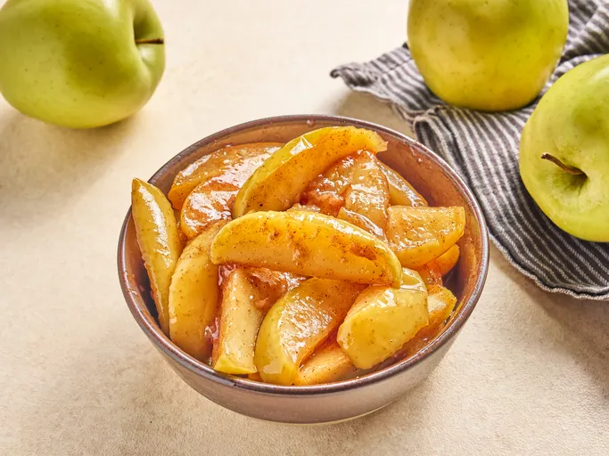

Copycat Cracker Barrel Fried Apples Recipe!
Ingredients:
- 6 Tablespoons of Butter
- 4 Delicious Apples
- 2 Teaspoons of Ground Cinnamon
- 1/2 Cup of White Sugar
- 1/2 Cup of Cold Water
- 1 1/2 of a Tablespoon Cornstarch
Directions:
- Melt butter in a deep skillet over medium-high heat.
- Add apples, cinnamon and sugar and stir until well coated in sugar mixture,. Bring mixture to a simmer. Reduce heat to medium-low and cook, covered until apples are very tender, about 20 minutes.
- Whisk together cold water and cornstarch until dissolved. Stir cornstarch mixture into apple mixture and return to a simmer. Cook until thickened, about 2 minutes; remove from heat.
If everything goes right, you should be met with this:

This recipe was taken from Allrecipe!
Go back to the Main Page!